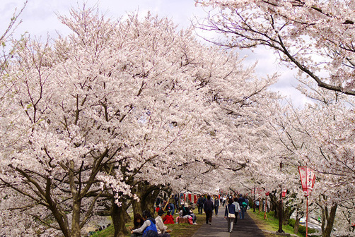

ปราสาทมัตสึเอะเป็นสถานที่ขึ้นชื่อในเรื่องทิวทัศน์ของดอกซากุระและได้รับการคัดเลือกเป็นหนึ่งใน “สถานที่ชมดอกซากุระที่มีชื่อเสียง 100 แห่งของประเทศญี่ปุ่น” ในช่วงปลายเดือนมีนาคมถึงต้นเดือนเมษายนจะมีการจัดงานเทศกาลปราสาท (โอชิโระมัตสึริ) และมีงานอีเว้นท์ในช่วงสุดสัปดาห์
ขึ้นรถโดยสาร ณ สถานีรถไฟมัตสึเอะของ JR ใช้เวลาเดินทางประมาณ 10 นาที จากนั้นลงที่ป้าย “มัตสึเอะโจ (โอเตะมาเอะ)” (松江城(大手前)) หรือป้าย “เค็นโจมาเอะ” (県庁前) แล้วเดินต่อไปอีกประมาณ 10 นาที
